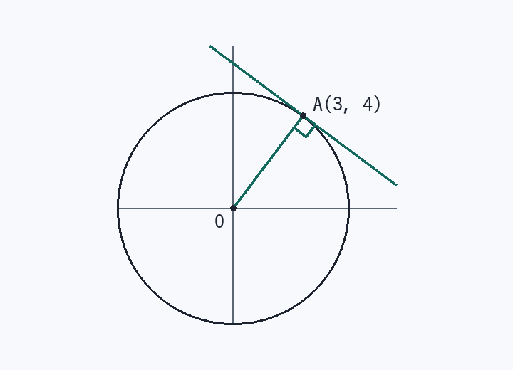

第21回 円の接線は「中心と接点を結んで垂直」
円 x² + y² = 25 上の点 A(3, 4) における接線の方程式を求めよ。

解法の型
x² + y² = r² 上の (x₁, y₁) での接線 → x₁x + y₁y = r²
2乗のうち片方を接点の値に置きかえるだけ。5秒で終わります。
解答手順
- 点が円上にあるか確認3² + 4² = 9 + 16 = 25 ○
円上の点でなければ、この型は使えません。
- 公式に当てはめる3x + 4y = 25
傾きの形なら y = −¾x + 25/4。
根拠：接線は半径 OA に垂直。OA の傾き 4/3 → 接線の傾き −3/4、A を通るので y − 4 = −¾(x − 3) → 3x + 4y = 25 と同じ式になります。
検算：中心 O から直線までの距離 = |−25| / √(3² + 4²) = 25 / 5 = 5 で半径と一致 → 接している。
差がつく2行
- 中心が原点でない円 (x − a)² + (y − b)² = r² では (x₁ − a)(x − a) + (y₁ − b)(y − b) = r²。ずらすだけで同じ形です。
- 円の外の点から引く接線はこの公式では出ません。傾き k で置いて「中心からの距離 = 半径」で解きます。
覚えるべきこと（在庫に入れる1行）
円上の接線は x² → x₁x、y² → y₁y に置きかえる
類題（翌日、何も見ずに）
- 円 x² + y² = 10 上の点 (−1, 3) における接線
答え
−x + 3y = 10（つまり x − 3y + 10 = 0）
- 円 x² + y² = 25 上の点 (0, −5) における接線
答え
−5y = 25 → y = −5
- 円 (x − 1)² + (y − 2)² = 5 上の点 (3, 3) における接線
答え
2(x − 1) + 1(y − 2) = 5 → 2x + y = 9